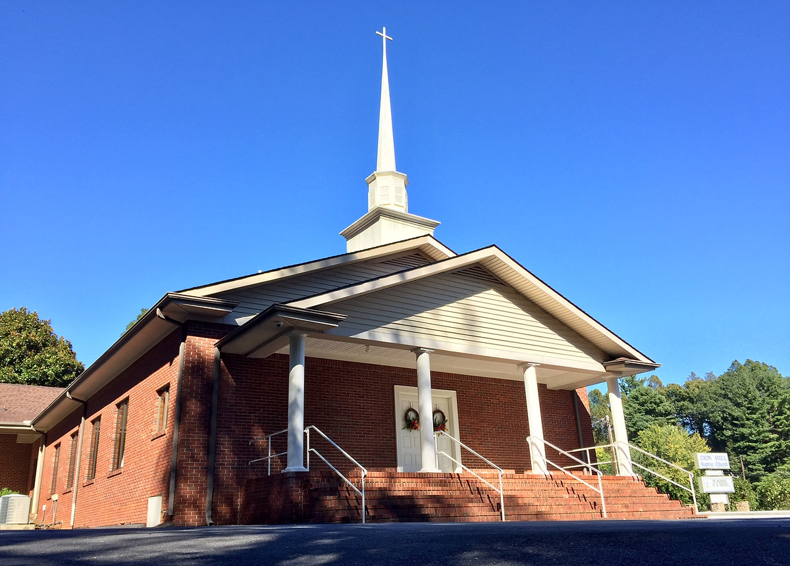

Broadcast Details
- StationWHKP
- DialAM 1450 / FM 107.7
- TimeSunday 8:05 AM
- ProgramTraditional Bible preaching
Missed the broadcast?
The same messages are usually posted in our online sermon archive after service.
Zion Hill Baptist Church broadcasts each Sunday morning at 8:05 AM on WHKP AM 1450 and 107.7 FM.
The same messages are usually posted in our online sermon archive after service.

Invite friends and family in the area to listen each Sunday morning before church.